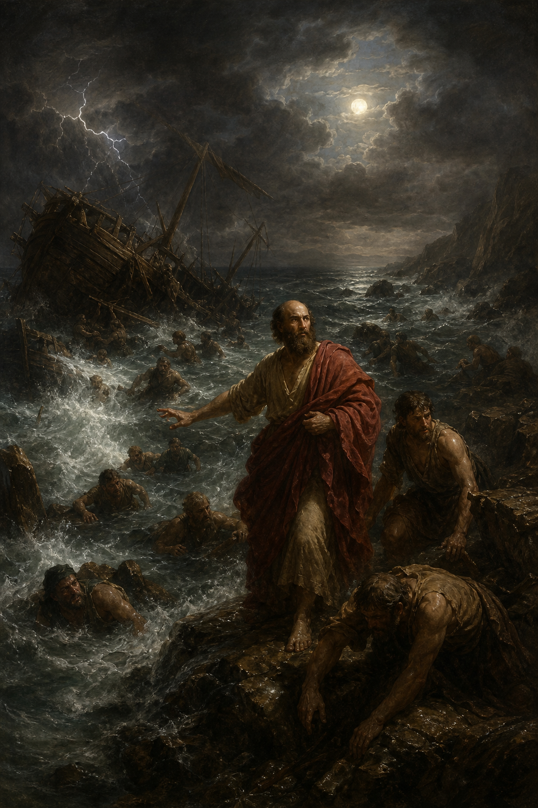

New Testament · Book 5 of 27
Acts
The Holy Spirit falls at Pentecost, and a handful of frightened disciples carry the gospel from a locked room in Jerusalem to the heart of the Roman Empire.
Acts picks up exactly where Luke's Gospel ends, and tells the story of what happens after the ascension: the Holy Spirit is poured out, the church is born, and ordinary fishermen and tax collectors become bold witnesses who turn the world upside down — first in Jerusalem, then Judea and Samaria, and finally to the ends of the earth.
But ye shall receive power, after that the Holy Ghost is come upon you: and ye shall be witnesses unto me both in Jerusalem, and in all Judaea, and in Samaria, and unto the uttermost part of the earth.
What happens in Acts
The book opens with the risen Christ's ascension and his promise of the Spirit, fulfilled ten days later at Pentecost when tongues of fire fall on the gathered disciples and Peter preaches the church's first sermon, three thousand souls added in a single day. The young Jerusalem church grows in boldness and generosity even as opposition mounts: Stephen becomes the first martyr, and his death scatters believers who carry the message with them, including to the unlikely convert Saul of Tarsus, struck down and transformed on the road to Damascus. Peter's vision opens the door of faith to Gentiles through Cornelius, and the narrative's center of gravity shifts to Antioch and then to Paul, whose three missionary journeys crisscross Asia Minor and Greece planting churches amid riots, floggings, shipwrecks, and imprisonments, defended all the while by his unshakable conviction that nothing can stop the word of God. A council in Jerusalem settles the terms on which Gentiles are received without the burden of the law, freeing the gospel to run further still. The final chapters trace Paul's arrest in Jerusalem, his trials before governors and a king, his harrowing voyage and shipwreck at Malta, and his arrival at last in Rome, where under guard but unhindered, he spends two years preaching the kingdom of God with all confidence, no man forbidding him.
Why it matters
Acts is the hinge between the Gospels and the epistles, the only inspired history of the earliest church, and the template for Spirit-filled mission ever since. It shows that the same power that raised Jesus from the dead now indwells ordinary believers, turning fear into boldness and scattering persecution into opportunity, and it establishes that the gospel was never meant to stay in one place or belong to one people — it was always headed to the uttermost part of the earth.
Jump to a chapter
Acts has 28 chapters — select one to begin reading there.